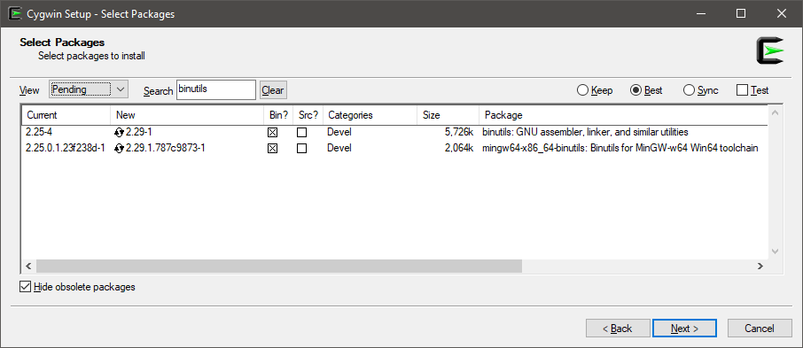

Disassembler
Can be enabled by using [DisassemblyDiagnoser] or command line args: -d or --disasm.
The configuration options available from code level are:
maxDepth: Includes called methods to given level. 1 by default, indexed from 1. To print just the benchmark set it to 0. This option is also available from the console arguments level--disasmDepth.printSource: C#|F#|VB source code will be printed. False by default.printInstructionAddresses: Print instruction addresses. False by default.exportGithubMarkdown: Exports to GitHub markdown. True by default.exportHtml: Exports to HTML with clickable links. False by default.exportCombinedDisassemblyReport: Exports all benchmarks to a single HTML report. Makes it easy to compare different runtimes or methods (each becomes a column in HTML table).exportDiff: Exports a diff of the assembly code to the Github markdown format. False by default.
Requirements
Disassembly Diagnoser requires following settings in your .csproj file:
<PropertyGroup>
<PlatformTarget>AnyCPU</PlatformTarget>
<DebugType>pdbonly</DebugType>
<DebugSymbols>true</DebugSymbols>
</PropertyGroup>
To get the source code we need to locate and read the .pdb files.
This is why we need DebugType and DebugSymbols settings.
To compare different platforms the project which defines benchmarks has to target AnyCPU.
Disassembly Diagnoser for Mono on Windows
If you want to get a disassembly listing for Mono on Windows, you need as and x86_64-w64-mingw32-objdump.exe tools.
If you don't have it, you will get a warning like follows:
It's impossible to get Mono disasm because you don't have some required tools:
'as' is not recognized as an internal or external command
'x86_64-w64-mingw32-objdump.exe' is not recognized as an internal or external command
The easiest way to get these tools:
- Download and install Cygwin
- On the "Select Packages" screen, search for
binutils - Install
binutilsandmingw64-x86_64-binutils - Add
cygwin64\bin\(orcygwin\bin\) in%PATH%

Sample: IntroDisassembly
Source code
using BenchmarkDotNet.Attributes;
using BenchmarkDotNet.Diagnosers;
using System.Linq;
namespace BenchmarkDotNet.Samples
{
[DisassemblyDiagnoser(printInstructionAddresses: true, syntax: DisassemblySyntax.Masm)]
public class IntroDisassembly
{
private int[] field = Enumerable.Range(0, 100).ToArray();
[Benchmark]
public int SumLocal()
{
var local = field; // we use local variable that points to the field
int sum = 0;
for (int i = 0; i < local.Length; i++)
sum += local[i];
return sum;
}
[Benchmark]
public int SumField()
{
int sum = 0;
for (int i = 0; i < field.Length; i++)
sum += field[i];
return sum;
}
}
}
Output
; .NET Framework 4.7.2 (CLR 4.0.30319.42000), 32bit LegacyJIT-v4.7.3110.0
05452718 BenchmarkDotNet.Samples.IntroDisassembly.Sum()
IL_0000: ldc.r8 0
IL_0009: stloc.0
0545271c d9ee fldz
IL_000a: ldc.i4.0
IL_000b: stloc.1
IL_000c: br.s IL_0017
0545271e 33c0 xor eax,eax
IL_000e: ldloc.0
IL_000f: ldloc.1
IL_0010: conv.r8
IL_0011: add
IL_0012: stloc.0
05452720 8945fc mov dword ptr [ebp-4],eax
05452723 db45fc fild dword ptr [ebp-4]
05452726 dec1 faddp st(1),st
IL_0013: ldloc.1
IL_0014: ldc.i4.1
IL_0015: add
IL_0016: stloc.1
05452728 40 inc eax
IL_0017: ldloc.1
IL_0018: ldc.i4.s 64
IL_001a: blt.s IL_000e
05452729 83f840 cmp eax,40h
0545272c 7cf2 jl 05452720
IL_001c: ldloc.0
IL_001d: ret
0545272e 8be5 mov esp,ebp
; .NET Core 2.1.0 (CoreCLR 4.6.26515.07, CoreFX 4.6.26515.06), 64bit RyuJIT
00007ffa`6c621320 BenchmarkDotNet.Samples.IntroDisassembly.Sum()
IL_0000: ldc.r8 0
IL_0009: stloc.0
00007ffa`6c621323 c4e17857c0 vxorps xmm0,xmm0,xmm0
IL_000a: ldc.i4.0
IL_000b: stloc.1
IL_000c: br.s IL_0017
00007ffa`6c621328 33c0 xor eax,eax
IL_000e: ldloc.0
IL_000f: ldloc.1
IL_0010: conv.r8
IL_0011: add
IL_0012: stloc.0
00007ffa`6c62132a c4e17057c9 vxorps xmm1,xmm1,xmm1
00007ffa`6c62132f c4e1732ac8 vcvtsi2sd xmm1,xmm1,eax
00007ffa`6c621334 c4e17b58c1 vaddsd xmm0,xmm0,xmm1
IL_0013: ldloc.1
IL_0014: ldc.i4.1
IL_0015: add
IL_0016: stloc.1
00007ffa`6c621339 ffc0 inc eax
IL_0017: ldloc.1
IL_0018: ldc.i4.s 64
IL_001a: blt.s IL_000e
00007ffa`6c62133b 83f840 cmp eax,40h
00007ffa`6c62133e 7cea jl 00007ffa`6c62132a
IL_001c: ldloc.0
IL_001d: ret
00007ffa`6c621340 c3 ret
Mono 5.12.0 (Visual Studio), 64bit
Sum
sub $0x18,%rsp
mov %rsi,(%rsp)
xorpd %xmm0,%xmm0
movsd %xmm0,0x8(%rsp)
xor %esi,%esi
jmp 2e
xchg %ax,%ax
movsd 0x8(%rsp),%xmm0
cvtsi2sd %esi,%xmm1
addsd %xmm1,%xmm0
movsd %xmm0,0x8(%rsp)
inc %esi
cmp $0x40,%esi
jl 18
movsd 0x8(%rsp),%xmm0
mov (%rsp),%rsi
add $0x18,%rsp
retq
Links
- Diagnosers
- Disassembler
- The permanent link to this sample: BenchmarkDotNet.Samples.IntroDisassembly
Sample: IntroDisassemblyRyuJit
Source code
using System.Linq;
using BenchmarkDotNet.Attributes;
namespace BenchmarkDotNet.Samples
{
[DisassemblyDiagnoser(printSource: true)]
[RyuJitX64Job]
public class IntroDisassemblyRyuJit
{
private int[] field = Enumerable.Range(0, 100).ToArray();
[Benchmark]
public int SumLocal()
{
var local = field; // we use local variable that points to the field
int sum = 0;
for (int i = 0; i < local.Length; i++)
sum += local[i];
return sum;
}
[Benchmark]
public int SumField()
{
int sum = 0;
for (int i = 0; i < field.Length; i++)
sum += field[i];
return sum;
}
}
}
Output

Links
- Diagnosers
- Disassembler
- The permanent link to this sample: BenchmarkDotNet.Samples.IntroDisassemblyRyuJit
Sample: IntroDisassemblyAllJits
You can use a single config to compare the generated assembly code for ALL JITs.
But to allow benchmarking any target platform architecture the project which defines benchmarks has to target AnyCPU.
<PropertyGroup>
<PlatformTarget>AnyCPU</PlatformTarget>
</PropertyGroup>
Source code
using BenchmarkDotNet.Attributes;
using BenchmarkDotNet.Configs;
using BenchmarkDotNet.Diagnosers;
using BenchmarkDotNet.Environments;
using BenchmarkDotNet.Jobs;
namespace BenchmarkDotNet.Samples
{
[Config(typeof(MultipleJits))]
public class IntroDisassemblyAllJits
{
public class MultipleJits : ManualConfig
{
public MultipleJits()
{
AddJob(Job.ShortRun.WithPlatform(Platform.X86).WithRuntime(new MonoRuntime(name: "Mono x86", customPath: @"C:\Program Files (x86)\Mono\bin\mono.exe")));
AddJob(Job.ShortRun.WithPlatform(Platform.X64).WithRuntime(new MonoRuntime(name: "Mono x64", customPath: @"C:\Program Files\Mono\bin\mono.exe")));
AddJob(Job.ShortRun.WithJit(Jit.LegacyJit).WithPlatform(Platform.X86).WithRuntime(ClrRuntime.Net462));
AddJob(Job.ShortRun.WithJit(Jit.LegacyJit).WithPlatform(Platform.X64).WithRuntime(ClrRuntime.Net462));
AddJob(Job.ShortRun.WithJit(Jit.RyuJit).WithPlatform(Platform.X64).WithRuntime(ClrRuntime.Net462));
// RyuJit for .NET Core 5.0
AddJob(Job.ShortRun.WithJit(Jit.RyuJit).WithPlatform(Platform.X64).WithRuntime(CoreRuntime.Core50));
AddDiagnoser(new DisassemblyDiagnoser(new DisassemblyDiagnoserConfig(maxDepth: 3, exportDiff: true)));
}
}
private Increment increment = new Increment();
[Benchmark]
public int CallVirtualMethod() => increment.OperateTwice(10);
public abstract class Operation // abstract unary integer operation
{
public abstract int Operate(int input);
public int OperateTwice(int input) => Operate(Operate(input)); // two virtual calls to Operate
}
public sealed class Increment : Operation // concrete, sealed operation: increment by fixed amount
{
public readonly int Amount;
public Increment(int amount = 1) { Amount = amount; }
public override int Operate(int input) => input + Amount;
}
}
}
Output
The disassembly result can be obtained here. The file was too big to embed it in this doc page.
Links
- Diagnosers
- Disassembler
- The permanent link to this sample: BenchmarkDotNet.Samples.IntroDisassemblyAllJits
Sample: IntroDisassemblyDry
Getting only the Disassembly without running the benchmarks for a long time.
Sometimes you might be interested only in the disassembly, not the results of the benchmarks. In that case you can use Job.Dry which runs the benchmark only once.
Source code
using BenchmarkDotNet.Attributes;
namespace BenchmarkDotNet.Samples
{
[DisassemblyDiagnoser(maxDepth: 3)]
[DryJob]
public class IntroDisassemblyDry
{
[Benchmark]
public void Foo()
{
}
}
}
Links
- Diagnosers
- Disassembler
- The permanent link to this sample: BenchmarkDotNet.Samples.IntroDisassemblyDry